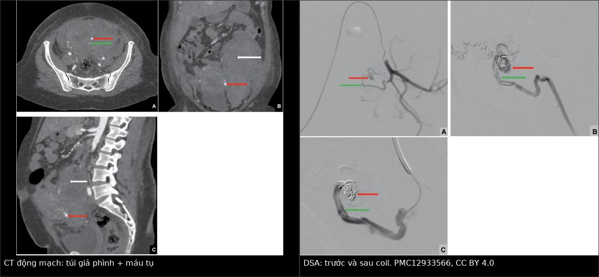
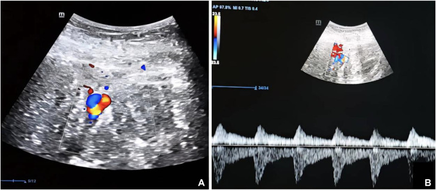
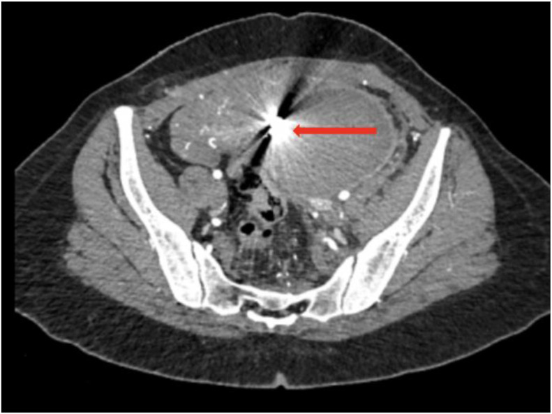
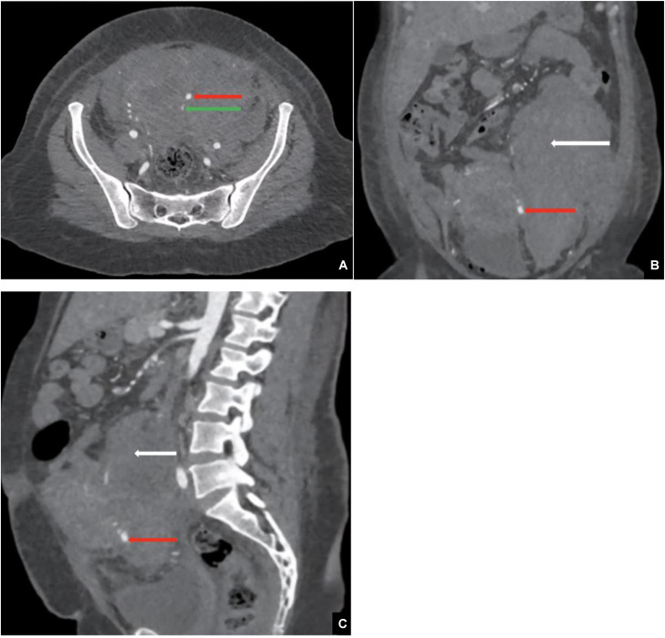
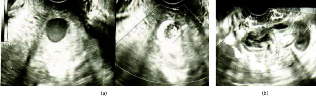

1723 — Giả phình động mạch tử cung sau mổ lấy thai/nạo / Uterine artery pseudoaneurysm
Tags: pattern:gia-phinh pattern:yin-yang pattern:to-and-fro pattern:chay-mau-am-dao vung:tu-cung vung:tieu-khung vung:dong-mach-tu-cung protocol:SA-Doppler protocol:CTA protocol:DSA protocol:UAE incidentaloma:gia-phinh
Mức chắc chắn (certainty): tổng hợp y văn (literature synthesis) — 1 tổng quan hệ thống 144 bệnh nhân (PMC12433499), 1 loạt 2 ca có đủ CT–DSA–coil (PMC13456665), 1 ca nguyên văn có siêu âm Doppler + CT + DSA (PMC12933566) và 1 ca vỡ ra ngoài phúc mạc không chảy máu âm đạo (PMC38046834). Câu nào là suy luận được ghi [suy luận].
Vì sao bài này quan trọng: đây là nguyên nhân chảy máu ồ ạt sau mổ lấy thai/nạo mà siêu âm thường quy bỏ sót nếu không bật Doppler màu; điều trị khác hẳn dị dạng động–tĩnh mạch (UAVM): nút chọn lọc đúng một túi, không nút cả hai động mạch tử cung. Bỏ sót hoặc nạo lại vì "nghi sót nhau" trên túi giả phình chưa chẩn đoán = vỡ túi, mất máu ồ ạt.
1. Tổng quan bệnh học – cơ chế hình ảnh
- Bản chất: giả phình (pseudoaneurysm, PA) là khoang máu ngoài lòng mạch còn thông với động mạch qua một cổ (neck); thành khoang không có 3 lớp mạch mà chỉ là adventitia/mô xơ/tụ máu tổ chức hóa. Vì thành mỏng và chịu áp lực động mạch, túi to dần và vỡ — khác phình thật (aneurysm) có đủ 3 lớp.
- Cơ chế sau sản khoa: tổn thương thành nhánh động mạch tử cung trong mổ lấy thai, nạo/hút thai, bóc u xơ, cắt cổ tử cung, thủ thuật nội soi buồng tử cung → máu thoát ra nhưng còn thông với lòng mạch. Ước tính 3–6/1.000 ca sinh; chiếm 0,3–1% các ca chảy máu sau sinh (PPH); ~40% xuất hiện sau sinh thường hoặc sảy không do chấn thương (PMC12433499).
- TẠI SAO Doppler màu cho "yin–yang": trong túi có dòng xoáy (swirl): máu vào ở tâm và quay ra ở ngoại vi tạo hai vùng đỏ–xanh đối nhau trong cùng một túi — dấu yin–yang sign. Đây không phải "mạch máu giàu tưới" chung chung: màu đổi chiều trong cùng một cấu trúc tròn mới là chốt.
- TẠI SAO phổ xung cho "to-and-fro": đặt cửa sổ Doppler ngay cổ túi, dòng đi vào trong thì tâm thu và quay ngược ra trong thì tâm trương → phổ hai chiều đối xứng qua đường đẳng điện, đỉnh tâm thu thấp và rộng hơn động mạch bình thường. Đây là hệ quả trực tiếp của khoang máu có cổ hẹp, đàn hồi kém.
- TẠI SAO CTA thấy rõ: túi giả phình đọng cản quang cùng thì động mạch và giữ hình ở thì muộn (khác thoát mạch hoạt tính: lan và đổi hình theo thì). CTA lát mỏng 1 mm + MPR cho thấy cổ túi, động mạch nuôi và tương quan với niệu quản/bàng quang trước khi nút.
- TẠI SAO nguy hiểm: túi nằm trong cơ tử cung hoặc lồi ra ngoài thanh mạc (exophytic); khi vỡ có thể chảy máu vào ổ bụng/sau phúc mạc mà KHÔNG có máu âm đạo — bệnh nhân đến bằng đau bụng, sốt, tụt huyết áp (PMC38046834).
- Số liệu định lượng cốt lõi:
- Tổng quan hệ thống 144 bệnh nhân (124 không mang thai, 20 mang thai): nút mạch là điều trị chính 99% (không thai) và 90% (có thai), không có tử vong; ở nhóm không mang thai chảy máu âm đạo 81,5%, và chảy máu liên quan đến nhu cầu truyền máu (p < 0,05).
- Túi nhỏ hơn lại dễ chảy máu hơn: nhóm có chảy máu 24,5 mm so với 32,3 mm (p = 0,017) → không dùng kích thước để quyết định theo dõi (PMC12433499).
- Ca nguyên văn (PMC12933566): nữ 35 tuổi, mổ lấy thai lần 3, ngày 5 sau mổ đau bụng–nôn, HA 90/70 mmHg, Hb 6 g/dL, không có máu âm đạo; truyền 2 + 4 đơn vị hồng cầu đưa Hb lên 11 g/dL; CT thấy máu tụ sau phúc mạc + túi giả phình; nút coil thành công.
- Ca loạt 2 bệnh nhân (PMC13456665): túi 1,8 cm (ngày 6 sau sinh thường, ngất, Hb 10,6 → 8,8 g/dL, có tràn máu ổ bụng + ứ nước thận do máu tụ chèn) và túi 2,7 cm (chảy máu âm đạo nặng nhưng không đau); cả hai nút 4 coil Hilal 18 2/20 mm.
- Ca vỡ ngoài phúc mạc (PMC38046834): 31 tuổi, ngày 7 sau sinh thường, đau bụng + sốt, không chảy máu âm đạo; nút coil + n-butyl-2-cyanoacrylate, ra viện ngày 12, túi biến mất trên siêu âm lúc 8 tháng.
2. Mẫu hình + chẩn đoán phân biệt theo vị trí (gamut)
- Túi tròn có cổ trong cơ tử cung/cạnh tử cung + chảy máu muộn → gamut: giả phình động mạch tử cung, UAVM/EMV, RPOC tăng sinh mạch, thai trứng/GTN, dị dạng mạch bẩm sinh, máu tụ tổ chức hóa có tưới máu.
- Theo vị trí: thân tử cung → nhánh động mạch tử cung; đoạn dưới/cạnh cổ tử cung → nhánh xuống động mạch tử cung (hay sau mổ lấy thai); cạnh âm đạo → nhánh âm đạo; sau phúc mạc → nhánh tử cung bị vỡ ra ngoài.
- Theo thời điểm: sớm vài giờ–vài ngày sau mổ/nạo (chảy máu cấp) hoặc muộn 2–6 tuần (chảy máu tái diễn, "secondary PPH" đỉnh ngày 8–14).
- Gợi nhớ "PSEUDO": Post-partum/post-procedure, Systolic bruit/to-and-fro, Extravasation on CTA, Uterine artery branch, Discrete sac with neck, Observe only if thrombosed.
3. Bảng so sánh phân biệt (ma trận đối chiếu)
| Thực thể (entity) | Hình ảnh điển hình | Chốt vào (rule-in) | Chốt loại (rule-out) | Gợi ý xác nhận |
|---|---|---|---|---|
| Giả phình động mạch tử cung (UAP) | Túi tròn có cổ, yin–yang trong túi, phổ to-and-fro ở cổ; CTA đọng cản quang thì động mạch, giữ hình thì muộn | Túi khu trú + cổ + yin–yang/to-and-fro | Mạng mạch lan tỏa không túi, hồi lưu tĩnh mạch sớm → UAVM | DSA + nút chọn lọc |
| UAVM / EMV sau thai | Đám rối mạch lan tỏa trong cơ tử cung, PSV 25–110 cm/s, RI 0,27–0,75, hồi lưu tĩnh mạch sớm; EMV 50,5% ngày 3 → 3,9% ở 6 tuần | Mạng mạch lan tỏa + tĩnh mạch cản quang sớm | Túi có cổ đơn độc → giả phình | Theo dõi EMV; UAVM nút/keo |
| RPOC tăng sinh mạch | Khối trong lòng buồng tử cung, có mạch nuôi từ cơ; hCG còn dương | Khối trong lòng + hCG (+) | Túi ngoài lòng, hCG âm → giả phình | Hút nội soi sau khi đã loại giả phình |
| Thai trứng / GTN | Khối trong buồng tử cung, "bão tuyết", mạch giãn, hCG rất cao | hCG rất cao + khối trong lòng | Túi có cổ + hCG âm → mạch máu | hCG chuỗi + siêu âm |
| Máu tụ tổ chức hóa | Khối hỗn hợp, không có cổ, không đọng cản quang thì muộn | Không ngấm thuốc + không cổ | Có cổ + đọng thuốc → giả phình | Theo dõi siêu âm |
| Vỡ tử cung / nhau bong non | Dịch ổ bụng, mất liên tục cơ tử cung, thai ngoài buồng | Mất liên tục thành cơ + dịch ổ bụng | Thành cơ liền + túi mạch → UAP | Mổ cấp nếu bệnh cảnh phù hợp |

Trái: CT động mạch — túi giả phình (mũi tên đỏ) phát sinh từ động mạch tử cung trái (mũi tên xanh), kèm máu tụ sau phúc mạc (mũi tên trắng). Phải: DSA — túi trước nút và sau đặt coil. Nguồn: Maireche A et al., Radiol Case Rep 2026, PMC12933566, CC BY 4.0; ảnh ghép letterbox.Ba dấu hiệu phải đọc đúng
- Yin–yang sign: hai vùng màu đối nhau trong cùng một túi tròn, đổi theo nhịp tim; không phải "nhiều mạch" rải rác.
- To-and-fro: phổ hai chiều ở cổ túi; nếu đặt sai vị trí (trong lòng tử cung) sẽ chỉ thấy phổ động mạch thấp hoặc nhiễu.
- Cổ túi (neck): thấy rõ nhất trên CTA lát mỏng hoặc DSA; có cổ = còn thông với động mạch = còn nguy cơ vỡ, kể cả khi túi nhỏ.
4. Protocol chụp + hệ phân độ/điểm chuẩn hóa
- Bước 1 — siêu âm Doppler màu + phổ xung (đầu tay): đầu dò âm đạo, khảo sát toàn bộ cơ tử cung, đoạn dưới, cạnh cổ; bật Doppler màu tìm túi yin–yang, đặt cổ túi ghi to-and-fro; đo kích thước 3 chiều và PSV/RI. Siêu âm bình thường trên B-mode không loại trừ — phải có Doppler.
- Bước 2 — CTA bụng–chậu: cản quang 100 mL, 350 mgI/mL, 4 mL/s; thì động mạch 25–30 giây, thì cổng 70 giây; lát 1 mm, MPR axial/coronal/sagittal + MIP/VR. Mục tiêu: cổ túi, động mạch nuôi, máu tụ sau phúc mạc, tương quan niệu quản.
- Bước 3 — MRI khi có thai hoặc suy thận: không ion hóa; T2/flow void thấy túi/tổn thương mạch; MRI có cản quang chỉ khi thật cần và sau khi cân nhắc thai. Trong thai, MRI là phương thức ưu tiên (70% ca mang thai dùng MRI; PMC12433499).
- Bước 4 — DSA: vừa chẩn đoán vừa điều trị; siêu chọn lọc nhánh tử cung, nút bằng coil hoặc keo/NBCA; chụp kiểm tra còn tồn dư trước khi kết thúc.
- Không có hệ phân độ chính thức cho UAP. Mô tả theo 4 trục: kích thước (mm) × vị trí (thân/đoạn dưới/cạnh cổ/sau phúc mạc) × có cổ còn thông hay đã huyết khối × huyết động. Điều trị theo trục còn thông + huyết động, không theo mm.
- Điều trị: nút mạch chọn lọc là chuẩn — được dùng ở 90–99% ca, ít biến chứng và không có tử vong trong tổng quan 144 bệnh nhân, giữ tử cung (PMC12433499); mổ thắt động mạch chậu trong khi không có IR (ca Tunisia, PMC39253026); tiêm thrombin chỉ với túi nông, tiếp cận được; theo dõi chỉ khi túi đã huyết khối/không tưới và bệnh nhân ổn định (ca 27 tuần thai, không can thiệp, sinh thường ở 38⁴⁄₇ tuần; PMC12433499).
- Sau nút: siêu âm/CT lại 1–3 tháng; theo dõi hồi phục kinh nguyệt, khả năng sinh sản; không nạo buồng tử cung cho tới khi túi đã loại trừ.
flowchart TD
A[Chảy máu muộn sau sinh/sảy/nạo] --> B[SA Doppler màu + phổ xung]
B -->|Túi có cổ + yin-yang + to-and-fro| C[Giả phình ĐM tử cung]
B -->|Mạng mạch lan tỏa + hồi lưu TM sớm| D[UAVM hoặc EMV]
C --> E{Huyết động ổn và túi đã huyết khối?}
E -->|Không| F[CTA bụng-chậu 2 thì]
F --> G[DSA + nút siêu chọn lọc coil hoặc keo]
E -->|Có| H[Theo dõi sát + MRI, tuyệt đối không nạo]
G --> I[SA hoặc CT lại 1-3 tháng]
H --> I
5. Biến thể bình thường và cạm bẫy
- Biến thể: túi nhỏ < 1 cm, đã huyết khối hoàn toàn, không còn cổ trên CTA → có thể theo dõi nếu ổn định; nhưng phải chứng minh không còn thông bằng CTA/DSA, không suy từ siêu âm.
- Cạm bẫy 1 — "siêu âm bình thường": B-mode chỉ thấy khối echo hỗn hợp hoặc máu tụ; không bật Doppler = bỏ sót. Ở ca vỡ ngoài phúc mạc, không có máu âm đạo nên dễ chẩn đoán thành "nhiễm trùng hậu sản".
- Cạm bẫy 2 — nạo vì "nghi sót nhau": nạo trên túi giả phình chưa chẩn đoán gây chảy máu ồ ạt; ca 35 tuổi sau sinh ngày 27 đã nạo vì nghi RPOC → mất 1,2 L máu, truyền 4 hồng cầu + 3 huyết tương (PMC12723177). Quy tắc: chảy máu muộn + khối trong cơ → Doppler trước, nạo sau.
- Cạm bẫy 3 — nhầm với UAVM: UAVM là mạng lan tỏa, nút cả hai bên; UAP là một túi có cổ, chỉ nút nhánh nuôi. Nút nhầm "cả hai động mạch tử cung" làm tăng nguy cơ suy buồng trứng/hoại tử tử cung.
- Cạm bẫy 4 — kích thước nhỏ: túi 24,5 mm chảy máu nhiều hơn túi 32,3 mm (p = 0,017); không yên tâm vì túi nhỏ.
- Cạm bẫy 5 — bỏ sót máu tụ sau phúc mạc: đau lưng/hông + tụt Hb sau mổ lấy thai; CTA phải khảo sát toàn bộ sau phúc mạc tới hố thận, không chỉ tiểu khung.
6. Tự lượng giá — Blind Quiz
Ca 1 — Ngày 5 sau mổ lấy thai, đau bụng, HA 90/70 mmHg, Hb 6 g/dL, không ra máu âm đạo.

- Gợi ý: ba lần mổ lấy thai trước đó; bụng chướng nhẹ; không sốt.
- Hỏi: (1) Dấu hiệu trong túi là gì? (2) Phổ ở cổ túi nói gì? (3) Hai chẩn đoán phân biệt và bước tiếp theo?
Bấm để hiện đáp án
- Dấu hiệu: túi tròn có hai vùng màu đỏ–xanh đối nhau (yin–yang); phổ xung hai chiều to-and-fro ở cổ túi.
- Chẩn đoán: giả phình động mạch tử cung — thành túi chỉ là mô xơ nên vỡ dễ; máu chảy vào sau phúc mạc nên không có máu âm đạo.
- Bước tiếp: CTA bụng–chậu 2 thì → DSA + nút siêu chọn lọc; không nạo, không chờ vì Hb đang tụt.
- Sau nút, CT kiểm tra: coil tại chỗ, không còn túi:

- Nguồn: Maireche A et al., Radiol Case Rep 2026, PMC12933566, CC BY 4.0.
Ca 2 — Cùng bệnh nhân ca 1: sau hồi sức, chụp CT thì động mạch.

- Gợi ý: Hb 6 g/dL, không có máu âm đạo; bụng chướng, đau lan ra sau lưng.
- Hỏi: mô tả túi và mô mềm quanh nó; vì sao máu tụ lớn mà không thấy máu âm đạo?
Bấm để hiện đáp án
- Dấu hiệu: túi ngấm cản quang thì động mạch, có cổ nối nhánh động mạch tử cung trái (mũi tên đỏ/xanh); máu tụ lớn sau phúc mạc (mũi tên trắng) đẩy tử cung sang phải.
- Chẩn đoán: giả phình động mạch tử cung đã vỡ vào sau phúc mạc; điều trị coil qua DSA, CT sau nút không còn túi.
- Vì sao không có máu âm đạo: túi vỡ ra khoang sau phúc mạc, không thông với buồng tử cung/âm đạo — đây là lý do bệnh cảnh bị chẩn đoán nhầm thành "nhiễm trùng hậu sản".
- Nguồn: Maireche A et al., Radiol Case Rep 2026, PMC12933566, CC BY 4.0 (Fig. 2).
Ca 3 — Ngày 7 sau sinh thường, đau bụng + sốt, KHÔNG ra máu âm đạo.

- Gợi ý: bụng chướng, Hb giảm nhẹ, không tiền sử mổ lấy thai.
- Hỏi: vì sao chẩn đoán muộn? Can thiệp nào vừa chẩn đoán vừa điều trị?
Bấm để hiện đáp án
- Dấu hiệu: khối 1,7 × 1,6 cm cạnh tử cung, dòng xoáy trong khối trên Doppler màu; máu tụ 8 cm trong tiểu khung.
- Chẩn đoán: giả phình động mạch tử cung thể exophytic đã vỡ — túi nằm ngoài buồng tử cung nên không có máu âm đạo; có thể xảy ra dù không có yếu tố nguy cơ (không mổ lấy thai, không nạo).
- Điều trị: DSA + coil/NBCA; bệnh nhân ra viện ngày 12, túi không còn ở 8 tháng.
- Nguồn: Toshimitsu M et al., Case Rep Obstet Gynecol 2023, PMC10693466, CC BY 4.0 (Fig. 1).
Bài liên quan chéo
- 500 – Tổng quan Vú & Sản Phụ khoa
- 1657 – Dị dạng động–tĩnh mạch tử cung & tăng sinh mạch cơ tử cung: ngưỡng PSV/RI, CẤM nạo khi chưa loại trừ
- 1624 – Polyp nhau & khối trong buồng tử cung sau sinh/sảy: hCG âm không loại trừ
- 1717 – Vỡ tử cung trên sẹo mổ lấy thai
Không dùng để chẩn đoán độc lập khi chưa có người hướng dẫn.